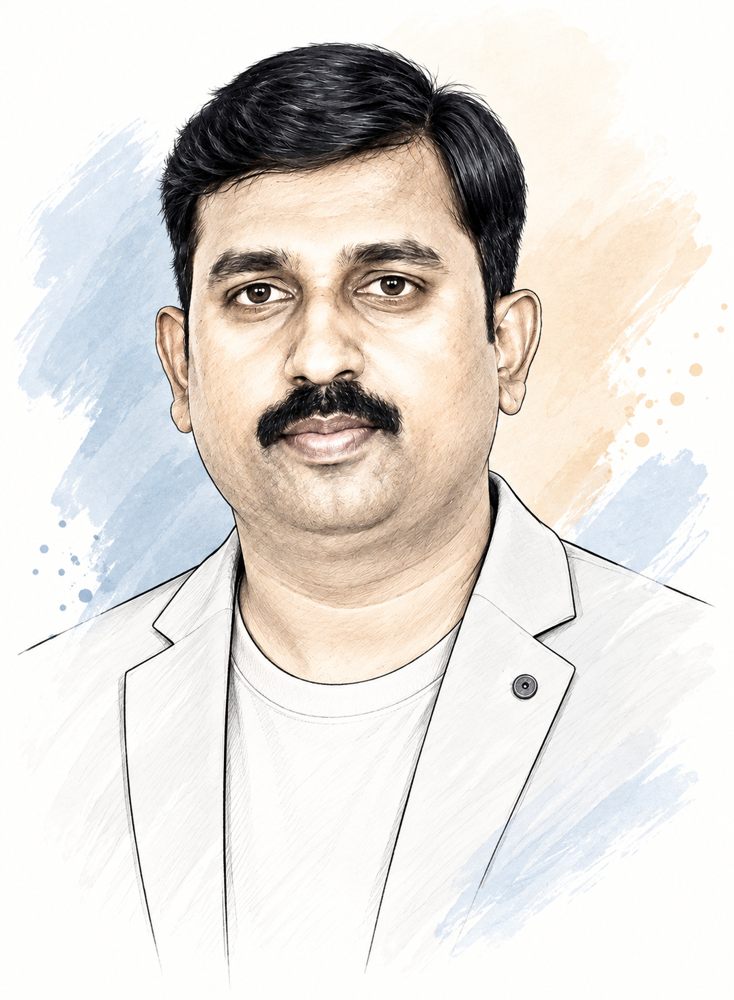

Resume
Srinivasa Channappa
“A UX design leader and mentor passionate about empowering my team, driving collaboration, and elevating digital product experiences — one interaction at a time.”

Lead UX professional with 19+ years of experience across UX strategy, user-centered design, UX research, interaction design, information architecture, enterprise product design and frontend development. Experienced in leading end-to-end UX initiatives for complex enterprise, healthcare, insurance and business applications — from discovery and stakeholder workshops through personas, journey mapping, task flows, IA, wireframes, high-fidelity prototypes, design systems and implementation. Strong track record of partnering with business leaders, product owners, Business Analysts, engineering and QA teams to translate complex requirements into intuitive, scalable experiences. Brings a strong design-to-development perspective and applies AI-first approaches using Figma, Figma Make, GitHub and GitHub Copilot to accelerate prototyping, iteration and collaboration.
01
Tools & Expertise
Design & Prototyping
UX & Product Design
Design Systems & Accessibility
AI-First UX
Technology & Handoff
02
Leadership & Core Capabilities
UX Leadership & Strategy
Enterprise Product Design
AI-First UX & Design-to-Code
Leadership & Collaboration
03
Professional Experience
19+ years leading UX across enterprise, healthcare and insurance products — from hands-on design through strategy, governance and cross-functional leadership.
-
WinWire Technologies India Pvt. Ltd. — Lead UX
- Lead UX strategy and end-to-end experience design across complex enterprise applications, guiding discovery, requirements analysis, information architecture, interaction design, prototyping, and UX quality from concept through implementation.
- Partner with business stakeholders, Product Owners, Business Analysts, engineering, and QA to frame problems, clarify complex requirements, facilitate design decisions, and align user needs with business and technical constraints.
- Lead UX workshops and discovery activities, translating complex business processes into personas, journeys, task flows, information architectures, wireframes, and high-fidelity prototypes across enterprise and healthcare products.
- Drive design-system thinking and UX governance through reusable patterns, component standards, responsive design, accessibility, branding consistency, and design quality standards across solutions.
- Establish design quality through reviews and implementation feedback, working closely with frontend teams to ensure design intent, interaction patterns, and approved UX are carried consistently into the delivered product.
- Champion AI-first UX workflows using Figma and Figma Make for rapid exploration and AI-assisted prototyping, while experimenting with Codex, Claude, VS Code, and GitHub Copilot to strengthen design-to-code collaboration.
- Support modernization of legacy enterprise workflows, balancing user needs, business rules, compliance considerations, technical feasibility, and implementation constraints to simplify complex experiences.
- Mentor and guide UX team members, facilitate design discussions and critiques, and collaborate with distributed and client teams to strengthen design quality, usability, and delivery outcomes.
-
Indegene Pvt. Ltd. — Web Lead
- Led UX and web design initiatives across the project lifecycle, providing experience direction and responsive solutions across desktop, tablet, and mobile experiences.
- Developed UX strategies aligned with business objectives, supporting sales teams with pre-sales UX approaches, solution concepts, and commercial estimates.
- Partnered with Business Analysts and stakeholders on strategy planning, requirement understanding, approach definition, and presentation of UX solutions.
- Collaborated with onsite and cross-functional teams to translate requirements into UI/UX solutions, prototypes, and responsive design deliverables.
- Provided UX guidance through implementation, working with frontend teams to maintain design consistency, usability, and quality across delivered experiences.
-
EVRY India Pvt. Ltd. — Senior UX Designer / UX Lead
- Led UX design activities for complex, multi-platform products within Agile delivery teams, translating customer and business needs into intuitive and usable digital experiences.
- Collaborated closely with Product Managers, Scrum Masters, Business Analysts, and engineering teams across discovery, requirements understanding, wireframing, prototyping, and responsive dashboard design.
- Provided UX direction across projects, contributing to estimation and planning while driving consistency in interaction patterns, usability, and UI quality.
-
Nichepro Technologies — Senior UI Designer
-
AdSOFT Solutions — Web Designer
04